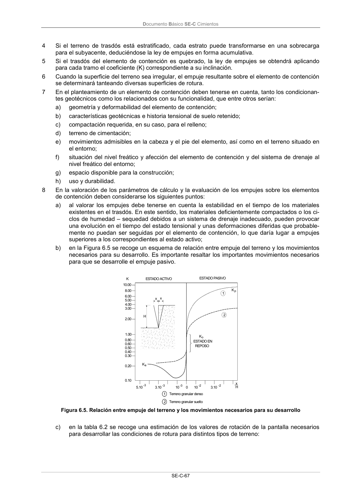

DB-SE-C Cimientos · edición 2019-12-20 · capa oficial
Documento DB-SE-C-oficial · SHA-256 del PDF a71133f4b0dca253e45ea3071c70f2a512354bcc5cd841bf89b1a502f567ac5e
Página física 72 de 165.
Copia fiel del PDF fuente · Fuente oficial
Ficha de la disposición en la fuente oficial
Formato: Texto de la página (Markdown)
Documento Básico SE-C Cimientos SE-C-67 4 Si el terreno de trasdós está estratificado, cada estrato puede transformarse en una sobrecarga para el subyacente, deduciéndose la ley de empujes en forma acumulativa. 5 Si el trasdós del elemento de contención es quebrado, la ley de empujes se obtendrá aplicando para cada tramo el coeficiente (K) correspondiente a su inclinación. 6 Cuando la superficie del terreno sea irregular, el empuje resultante sobre el elemento de contención se determinará tanteando diversas superficies de rotura. 7 En el planteamiento de un elemento de contención deben tenerse en cuenta, tanto los condicionan- tes geotécnicos como los relacionados con su funcionalidad, que entre otros serían: a) geometría y deformabilidad del elemento de contención; b) características geotécnicas e historia tensional de suelo retenido; c) compactación requerida, en su caso, para el relleno; d) terreno de cimentación; e) movimientos admisibles en la cabeza y el pie del elemento, así como en el terreno situado en el entorno; f) situación del nivel freático y afección del elemento de contención y del sistema de drenaje al nivel freático del entorno; g) espacio disponible para la construcción; h) uso y durabilidad. 8 En la valoración de los parámetros de cálculo y la evaluación de los empujes sobre los elementos de contención deben considerarse los siguientes puntos: a) al valorar los empujes debe tenerse en cuenta la estabilidad en el tiempo de los materiales existentes en el trasdós. En este sentido, los materiales deficientemente compactados o los ci- clos de humedad – sequedad debidos a un sistema de drenaje inadecuado, pueden provocar una evolución en el tiempo del estado tensional y unas deformaciones diferidas que probable- mente no puedan ser seguidas por el elemento de contención, lo que daría lugar a empujes superiores a los correspondientes al estado activo; b) en la Figura 6.5 se recoge un esquema de relación entre empuje del terreno y los movimientos necesarios para su desarrollo. Es importante resaltar los importantes movimientos necesarios para que se desarrolle el empuje pasivo. H x x ESTADO EN REPOSO Ko Kp Ka 10.00 8.00 6.00 5.00 4.00 3.00 2.00 1.00 0.60 0.80 0.50 0.40 0.30 0.20 0.10 5.10 -3 3.10 -3 10 -3 10 -2 3.10 -2 0 x H 1 2 Terreno granular denso Terreno granular suelto ESTADO PASIVO ESTADO ACTIVO K 1 2 Figura 6.5. Relación entre empuje del terreno y los movimientos necesarios para su desarrollo c) en la tabla 6.2 se recoge una estimación de los valores de rotación de la pantalla necesarios para desarrollar las condiciones de rotura para distintos tipos de terreno:

Datos candidatos: compruebe celdas y notas en el PDF.